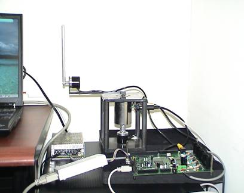

本系特色
一、教學目標
（一）培養學生實作的精神，結合理論、實務及整合的能力。
（二）分析與設計資訊系統，並利用計算機來解決和管理科學與工程有關的各種問題。
（三）因應社會需要與配合國家發展政策，積極培育資訊關鍵技術人才。
二、教學特色
（一）以現行學界應用最廣的MATLAB軟體為主體，建立一智慧型系統之教學環境。
（二）以DMA-ARM7 4510嵌入式開發設計平台為主體，建立嵌入式相關技術之教學環境。
（三）以ATMEL8051晶片為主體，教導學生如何設計為控制晶片。
（四）教導學生運用軟體工程概念，結合電機資訊與機械物理等理論，完成一套小型單一整合應用系統。
（五）教導學生運用無線網路工程概念，結合通訊電腦等理論，完成一套無線通訊應用平台。
（六）以電腦為平台，教導學生如何應用虛擬概念，設計一套降低成本且實用的虛擬實境模擬系統。
必（選）修專業課程
數學相關課程、程式設計、物理學、資訊概論、電子學、資料結構、數位邏輯、軟體工程概論、單晶片設計、人工智慧、模糊邏輯、資電導論、作業系統、計算機組織與結構、資料庫系統、系統分析與設計、分散式作業系統、行動通訊、資料倉儲與資料採擷、無線網路、數位信號處理、Linux作業系統及專題研究等。
主要進修管道
國內外資訊工程、資訊科學、電機與機電通訊等相關研究所進修及深造。
適合從事工作
參加企業舉辦之檢定取得認證資格或參加高普特考取得擔任公職資格，科學園區、工業園區及軟體園區擔任單晶片設計、人工智慧與資訊相關之電腦應用、多媒體設計、軟體系統開發與無線網路設計工作。
系特色圖片
資工系專題設備及電腦教室
